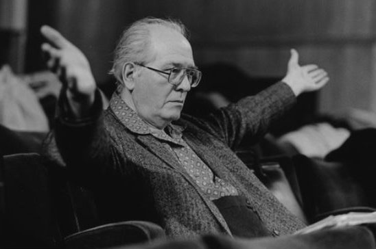
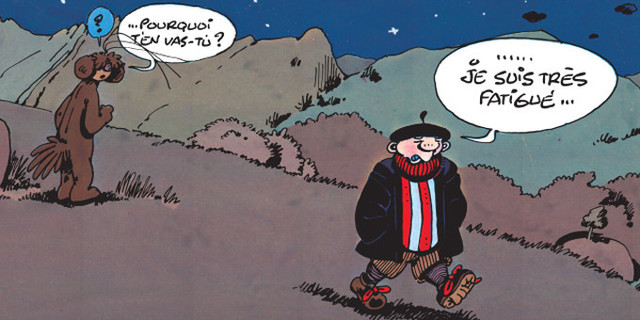

La solfateuse est un petit utilitaire qui a vocation à aider tout un chacun dans l'apprentissage du solfège, via quelques petits jeux - assez magnifiques - de lecture de notes, de constitution d'accords, etc.
C'est le top.
C'est mieux.
C'éclair !!!

Ce qu'il a de plus, c'est qu'il en fait moins.
Contrairement aux autres applications, celle-ci limite ses interactions avec l'utilisateur, et ne cherche pas à demander la réponse. C'est une volonté ! À l'initiative de ce jeu ! Elle vise à éviter de développer des automatismes entre les réponses et le mécanisme visuel et physiologique de l'interaction permettant d'indiquer sa réponse, qui pourrait décentrer l'attention de l'usager de la cible première : le travail intellectuel sur les notions solfégiques.
Bref, il va à l'essentiel.
C'émieux !!!
La solfateuse a été développée par Jéjé La Fripouille, dit "La Poirâsse".
